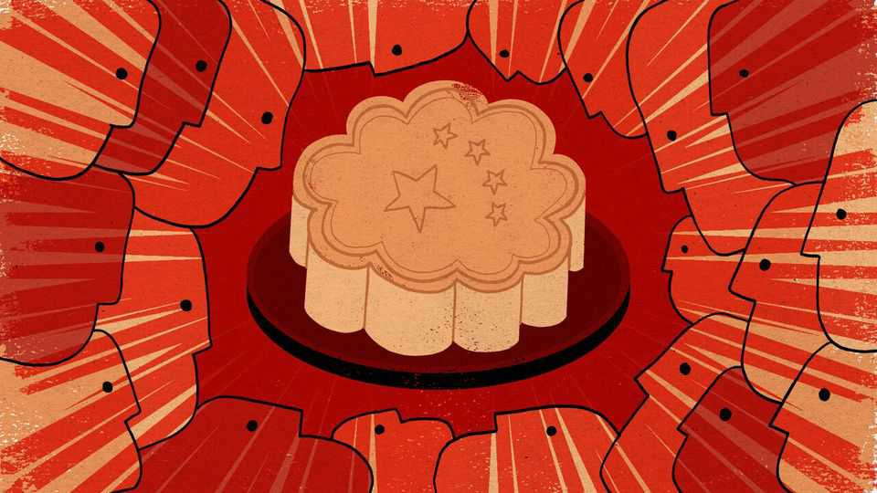

Xi Jinping uses old festivals to boost the party’s image
But ancient traditions may not always bend to his will

Oct 1st 2026
Glamping is not the most political of acts. It takes little courage to drive to a designer campsite, where white airy tents are already pitched and long wooden tables laden with food. Yet choosing to go camping at this time of year in China, when the autumn moon is full, can be political—albeit rather enjoyably so. It is evidence that traditional festivals, once forsaken by the government and neglected by many, have been re-established, with modern glosses, as fixtures of the Chinese year.
This year the mid-autumn festival fell on September 25th, making for a three-day weekend. It became a public holiday only in 2008. Not until recently did people find more ways to spend it than munching on mooncakes (dry pastries loved by some, loathed by others). Chaguan visited Zhangzhou, a city in Fujian province, in the lead-up. The old town was festooned with moon-themed decorations. One hour away, Double Fish Island, on the edge of the Taiwan Strait, was offering al fresco dinner for two for 298 yuan ($44) at its luxury campsite—all the better to admire the moon, the festival’s focal point.
In the early 20th century reformers railed against the lunar calendar and its holidays, seeing them as antithetical to modernity. In 1912, after the fall of the Qing dynasty, China’s republican government adopted the Gregorian calendar. The Communists went further, branding many festivals as feudal superstitions.
The return of these holidays as cornerstones of the Chinese calendar is thus impressive. In one of its more audacious about-faces, the Communist Party has morphed from sworn foe of old customs to their self-appointed arbiter and promoter. The lunar new year, cancelled during the Cultural Revolution, was restored in 1980. It was not until 2005, however, that the party issued a document calling for the revival of other holidays—especially the mid-autumn celebration, tomb-sweeping day in the spring and the dragon-boat festival in late spring or early summer.
Xi Jinping has given these festivals even greater political weight. He calls them expressions of Chinese cultural confidence—and suggests, by extension, that the party is the guarantor of Chineseness. Living “under the same moon” is a recurring propaganda theme around the mid-autumn festival. It is used to describe bonds between China’s ethnic groups, shared heritage across the Taiwan Strait and the common weal of humanity. State media seize on holidays to amplify an old idea much liked by Mr Xi: that nation and family are interwoven.
Yet the revival of traditional festivals is much more than a top-down exercise. True, observance is patchy: in many cities people just enjoy the day off. But in the south, and especially in Fujian, where temples and clan halls survived the Maoist years better than elsewhere, the festivals help form the rhythm of life. Older customs are an anchor against modern anomie, and the joys (and headaches) of family reunion matter more for many than the abstract concept of national unification. “The younger generation, people born after 1990, are mostly away for their studies or work. It’s only at festivals like this that they come back,” said Ms Chen, standing near a shrine to Confucius in central Zhangzhou. Alas this year her son could not get home from Guangzhou, because train tickets were sold out for the long weekend.
A common criticism of the holiday revival is that it is superficial. The tongue-in-cheek nickname for the mid-autumn celebration is “mooncake festival”, since eating mooncakes is the only way that many used to experience the holiday (plus, gift boxes were a handy way to bribe officials). The breadth of events now associated with the festival shows how traditions are deepening in many places, in no small part because cities want to attract more tourists. Zhangzhou hosts performances of folk characters on stilts; in Xi’an actors walk through the streets challenging visitors to poetry duels about the moon; the water town of Wuzhen sets up altars where people can leave food for Chang’e, the moon goddess (whose companion, the Jade Rabbit, can be spotted on the lunar landscape if you squint just right).
The more that people delve into these traditions, the more that another tension may emerge—between official prescriptions for culture and the way people actually want to live. Temples, big and small, are common sites in Zhangzhou. But any expansion requires approval from religious-affairs authorities, a burdensome process. Teachings must adhere to state-controlled interpretations. And religious sites must display national flags. One temple in Zhangzhou features large signboards in its main courtyard extolling Mr Xi’s accomplishments in protecting traditional culture.
His efforts entail risks. Championing holidays linked to ethnic-Han culture, as most are, could alienate minorities. For example, the lunar new year is not a traditional festival among Uyghurs in Xinjiang. Yet activists say some Uyghurs, most of whom are Muslim, have been pressured to drink alcohol and eat pork dumplings to show holiday spirit. The party also openly frets about villagers turning to temples and ancestral shrines as dispensers of temporal authority. Confucian mentors, such as one Chaguan recently met, can claim a moral power of their own. Confucianism, sometimes seen as a quasi-religion, is a statist belief system that emphasises hierarchy. As the mentor explained, a ruler does not have carte blanche. The population’s deference depends on the ruler governing with benevolence. Asked whether current leaders do so, he pursed his lips and declined to answer.
The party has made itself the guardian of traditions it once belittled and even tried to crush. In so doing, it has summoned forces whose roots run much deeper than its own, and which may ultimately have greater claims on the loyalty of the people. ■